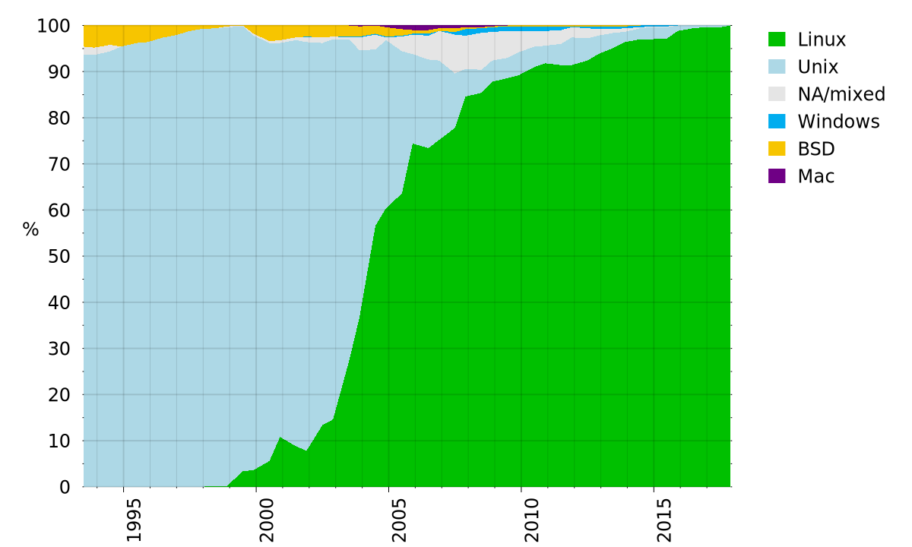
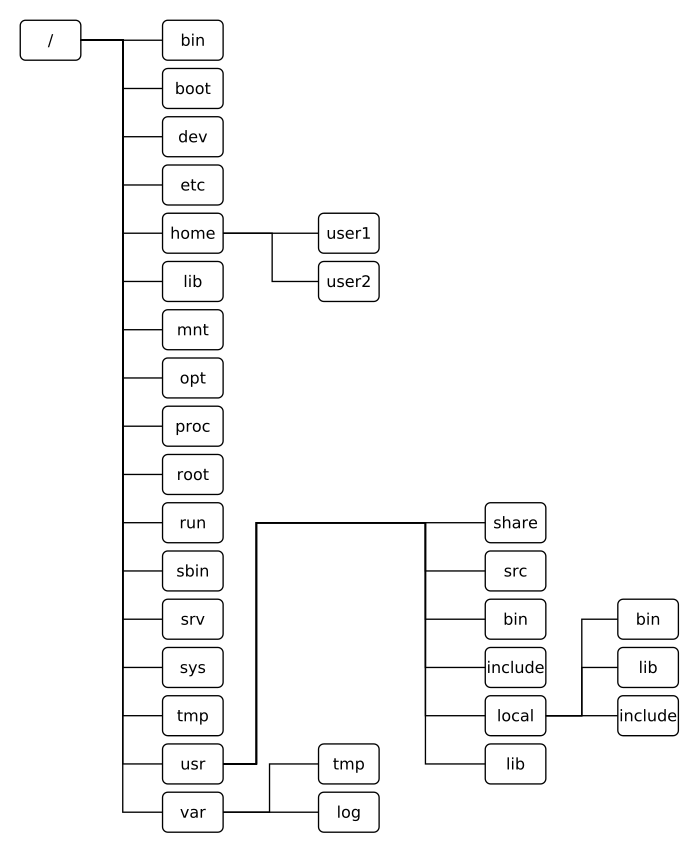

What is Linux and who uses it?
Top 500 Supercomputers

File System Hierarchy

shell scripting
https://arachnoid.com/linux/shell_programming.html
http://www.panix.com/~elflord/unix/bash-tute.html
http://tldp.org/HOWTO/Bash-Prog-Intro-HOWTO.html
https://linuxconfig.org/bash-scripting-tutorial-for-beginners
https://en.wikibooks.org/wiki/Bash_Shell_Scripting#Shell_arithmetic
http://matt.might.net/articles/bash-by-example/
http://tldp.org/LDP/Bash-Beginners-Guide/html/
sysfs and procfs
https://www.kernel.org/doc/Documentation/gpio/sysfs.txt
https://en.wikipedia.org/wiki/Sysfs
http://kroah.com/log/blog/2013/06/26/how-to-create-a-sysfs-file-correctly/
https://en.wikipedia.org/wiki/Procfs
https://kernelnewbies.org/Documents/Kernel-Docbooks?action=AttachFile&do=get&target=procfs-guide_2.6.29.pdf
File system
https://en.wikipedia.org/wiki/File_system_permissions#Traditional_Unix_permissions
http://jlk.fjfi.cvut.cz/arch/manpages/man/file-hierarchy.7
https://en.wikipedia.org/wiki/Filesystem_Hierarchy_Standard